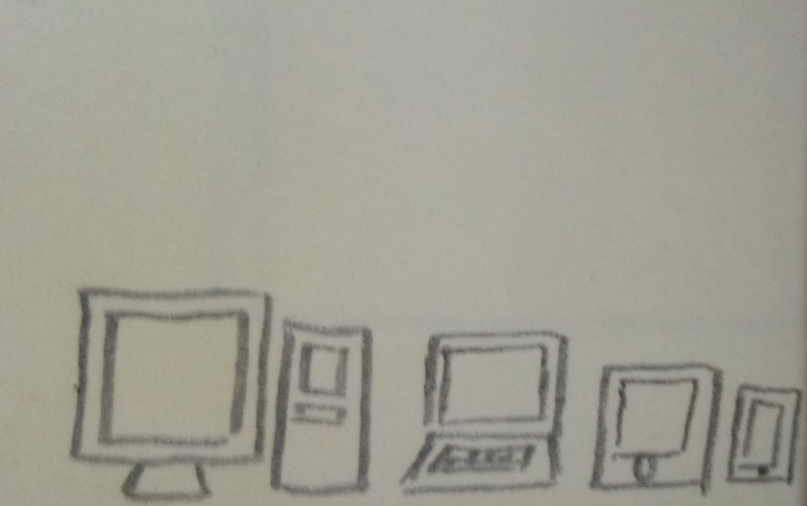
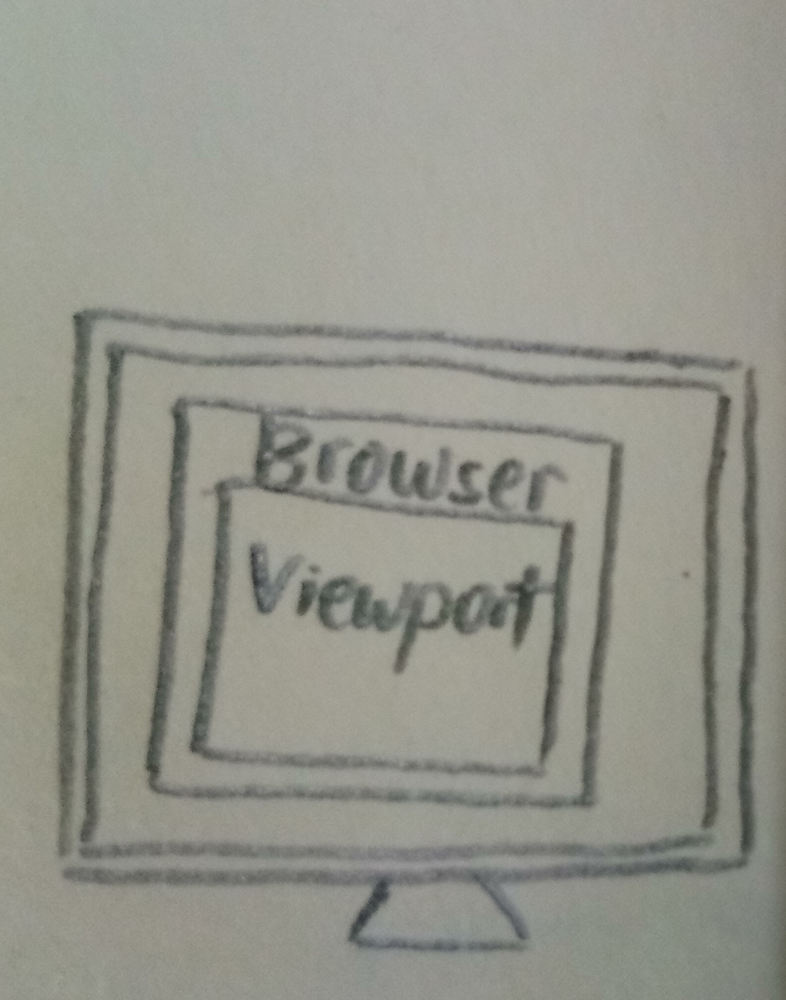
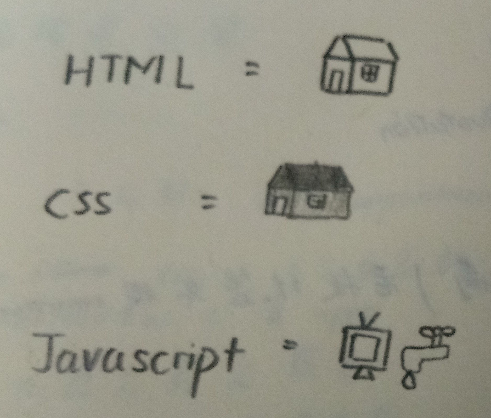
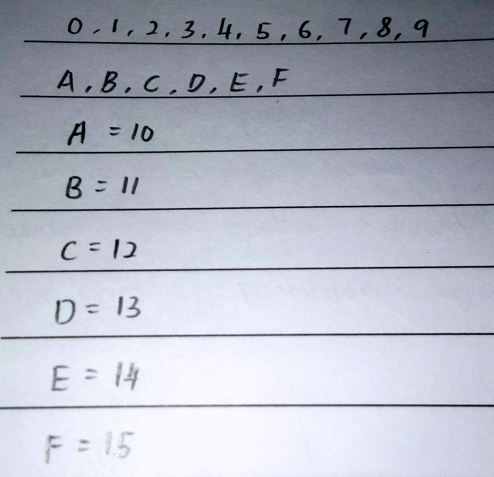
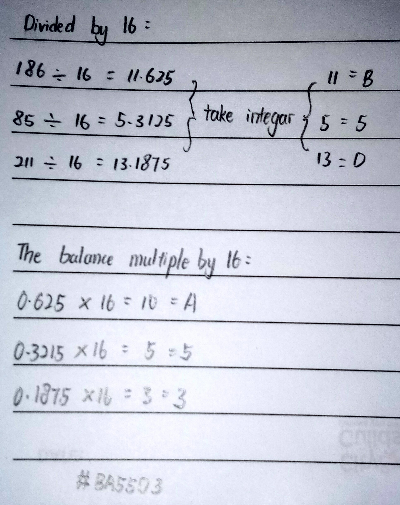

Outcome 1
- Describe the common devices of screen resolution for web pages
-

Computer or laptop are the common devices of screen resolution for webpages. As we can known, both of them have a higher screen resolution, so whenever using them to browse webpages, it will have a clear and larger viewport for users. Besides these two devices, mobile is also one of the common devices, but with less screen resolution. This cause some of the webpages cannot be fully-displayed through mobile phone. So, when browsing some webpages, mobile will direct link to the mobile webpages, or some webpages have adjust so the mobile still can display clear even with low screen resolution.
- Explain the significance of the speed of the internet connection between user’s devices and the internet. E.g : diferent file sizes and download times on the devices.
-
Internet connection speed direct affects the time taken for download a file, as slow internet connection speed will cause the time more longer to complete the download. Unstable internet connection will also lower the download speed, and the downloaded file size will be limited as unstable internet connection might cause internet corrupt.
- Describe the main features and capabilities found in modern web browsers.
-
Google Chrome
We can sign in to google account by using Google chrome, which it can synchronous our gmail information, so we don’t need to open a new tab for gmail. Google chrome also can let us to inspect webpage element in the same page, so we don’t need to change the tab which make us confuse.
Firefox
Mozilla firefox make the search easier, as we can choose to use different search engine to start searching. So we don’t need to open a new tab and go to the search engine website. Besides that, firefox also can do inspect webpage element in same page.
- State the different of HTML and HTML5 and identify its limitations
-
Both HTML and HTML5 has the same function, only HTML5 is a newer version than HTML, and its has more function than HTML. The most significant different is the integration of video and audio, which allow the video and audio file can be embedded into a webpage without plugins. However, it also has its limitations, and one of it is the compatibility. The browser that below the version of IE9 are not supported. Besides that, some browser also cannot support some of the HTML5 features.
- Describe the importance of pixel.
-
Pixel is a term derived from the words “picture” and “element”, and is the smallest representative unit of a digital image. Pixel can affect both screen resolution and picture, which a higher screen resolution is made by numerous of pixels. As for picture, a good picture is also made by numerous of pixels, and also affect by ppi (pixels per inch). The smaller value of ppi, the display image will be remain clear even zoom in.
- Explain the advantages and disadvantages between different graphics file formats suitable for use in a web page
-
JEPG
JPEG format use high compression to the file, make all JPEG format has smaller size. Even with small degree of compression, it can still remain high quality of the image, and it is compatible to any browser.
The disadvantage will be JPEG format does not support animatation, and also transparency. So, it is not recommend for working with text or monochrome graphics with clear boundaries.
-
PNG
PNG format also require small file size, which use minimum compression loss technical. The image won't loss its quality by any compression ratio, and we save the image again. PNG format also support PNG-24, which can support 1.67 million colors.
PNG format does not support animation, and not all web browsers can support PNG. Sometimes, PNG format will also might create larger files than JPEG.
-
GIF
GIF format can support animation, and also in smaller file size. Moreover, it can be support by all browser, and do not require any plug-in.
However, it can only support maximum color depth of 256bit. Besides that, when using many GIF format file, it may take some times to load all the webpages. It will also give the image have pixel appearance, which reduce image quality.
- Explain the issues involving copyright relevant to internet websites
-
Copyright protect original works, which the copyright holder has exclusive rights on its work that others cannot copy and use it. If we break the copyright law, we may be face criminal charges. The copyrights are not only referring to others work, but also privacy manner. For example, using others pictures without their permission can also break copyright law.
- Explain the term ‘viewport’
-

Viewport is the visible area of the webpages. The mobile phones and tablets will have smaller viewport than computer, unless the computer browser restore down its size. When the viewport are smaller, the display content will be smaller, or some webpage will invisible some content instead.
- Identify the function of HTML, CSS and Javascript
-

HTML is stand for Hyper Text Markup Language, and it is used to construct the base of webpages. We can input the content with various information, and these information will be display through browser.
CSS is Cascading Style Sheets, which is used to beautifying the webpages content. For example, through CSS we can change the font size, the position of content, some effect for the content and even more.
Javascript function is a block of code designed to perform a particular task, and it will executed when some action calls it.
- Explain How CSS Colours representation in Hexadecimal
-


Hexadecimal can affect CSS color by changing the rgb (Red, Green, Blue)value. Instead of 0-255 value, it is using 0-9 and A-F to represent its value, which A=10, B=11, C=12, D=13, E=14, F=15. When uses hexadecimal, it will need put # at first, and 6 digits after it. The first and second represent the red value, 3rd and 4th for green value and 5th and 6th is for blue value. It has its own calculate method to know when and what these value is. For example,
rgb (186,85,211) can be know as color MediumOrchid. Its hexadecimal will be need all three value of rgb. Red has 186 value, so divide it by 16, and we can get 11.625. Take the integer of 11, it is same value as B. 0.625 will be multiple by 16 again, so we can get 10, which same value as A. Same goes with green and blue value, so we can get BA55D3, which is the color MediumOrchid.